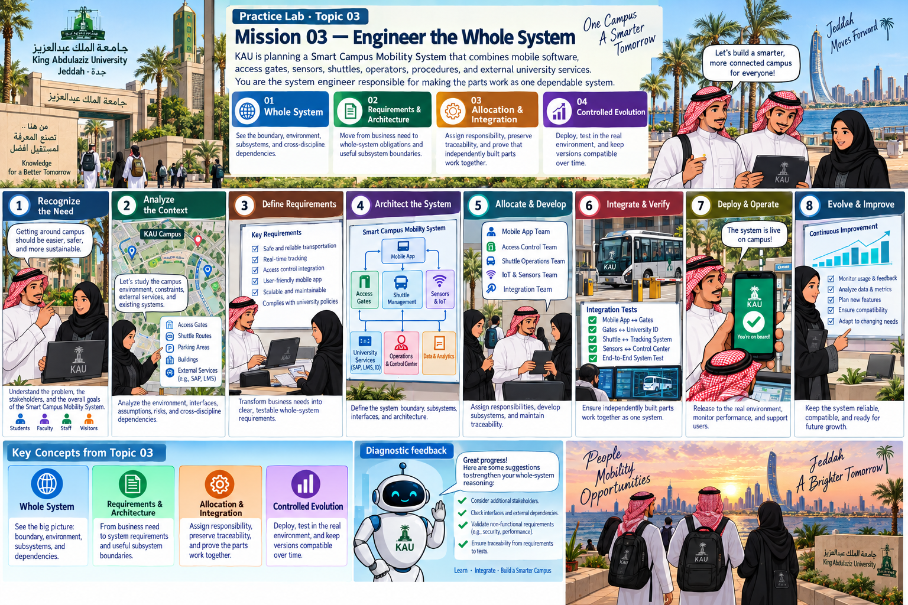

Practice Lab · Topic 03
KAU is planning a Smart Campus Mobility System that combines mobile software, access gates, sensors, shuttles, operators, procedures, and external university services. You are the system engineer responsible for making the parts work as one dependable system.
